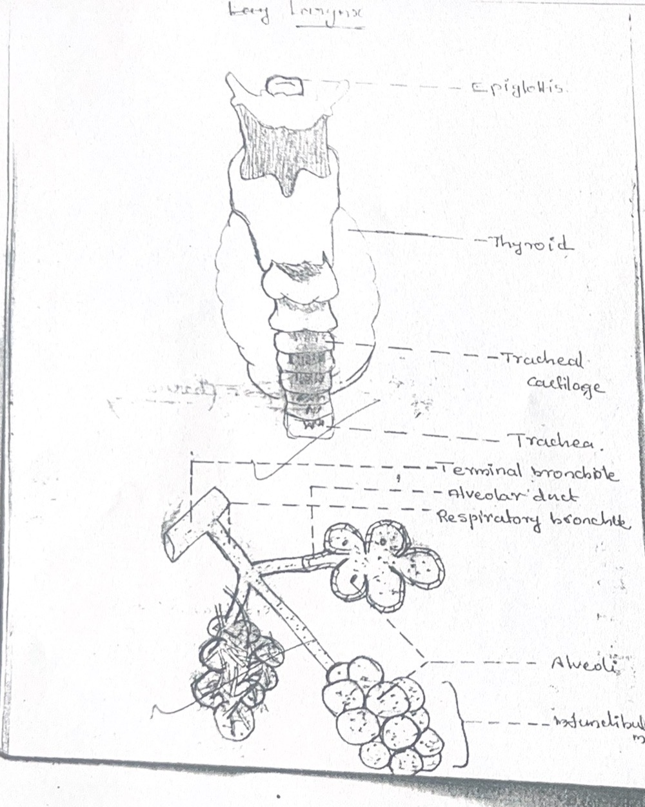
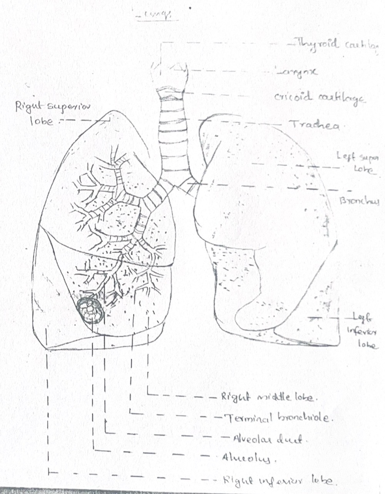
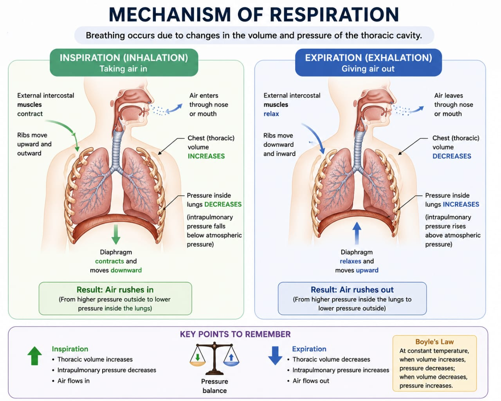
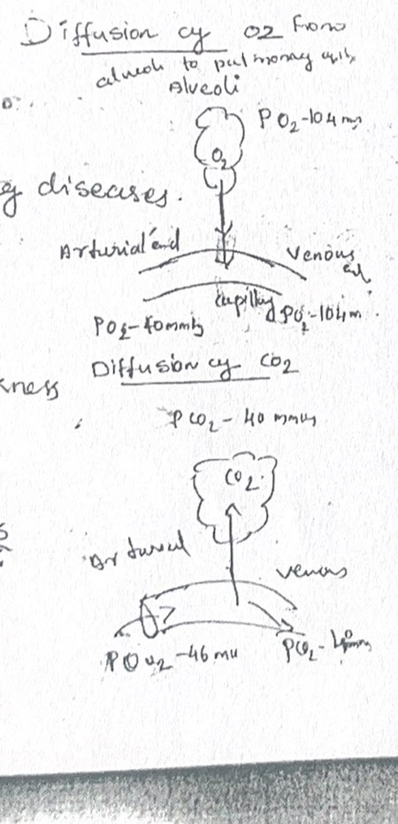
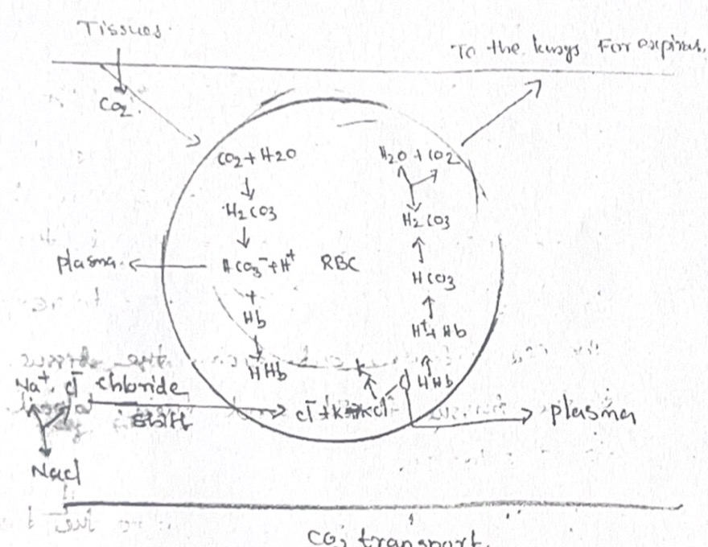

The Respiratory System: Organs & Functions
Two parts, one job: air passages carry and clean the air, and the lungs swap oxygen for carbon dioxide with the blood.
- Nasal cavity – filters, warms and moistens air (hairs, mucus, mucous membrane); holds the sense organs of smell.
- Pharynx – the shared passage for air and food.
- Larynx – the voice box; its opening (glottis) is guarded by the epiglottis.
- Trachea – the windpipe, a tube held open by C-shaped cartilage rings.
- Bronchi – the trachea divides into two, one for each lung.
- Lungs – soft, spongy, elastic; right has 3 lobes, left has 2.
- Bronchioles → alveoli – the fine branches ending in air sacs, where gas exchange happens.
- Diaphragm – the muscle sheet under the lungs that drives breathing.
Think of the system as a delivery road with a warehouse at the end. The road (nose to bronchioles) only carries air and cleans it on the way: dust is trapped by hairs and mucus, the air is warmed and moistened so it does not shock the delicate lung tissue. The warehouse (the alveoli) is where the real transaction happens: oxygen from the air passes into the blood, and carbon dioxide from the blood passes out into the air.
That is why the system has two zones: a conducting zone (nose, pharynx, larynx, trachea, bronchi, bronchioles – no gas exchange) and a respiratory zone (respiratory bronchioles, alveolar ducts, alveoli – gas exchange).
- Oxygen uptake and carbon dioxide removal – the main job (pulmonary respiration).
- Acid–base regulation – CO₂ carries acid, so breathing helps keep blood pH steady.
- Voice – air over the vocal cords in the larynx.
- Protection – filtering, mucus and cilia, cough.
From the Yoga & Human Body notes (respiratory section).
The air path, in order: Nose → Pharynx → Larynx → Trachea → Bronchi → Bronchioles → Alveoli.
A made-up sentence to hold the first letters: “Never Put Large Trucks Beyond Busy Areas.”
Breathing is not the same as respiration. Breathing (ventilation) is the movement of air in and out. Respiration is the exchange of gases – at the lungs (external) and at the tissues (internal). You breathe with muscles; you respire with diffusion.
“The lungs are the respiratory organs. They take oxygen from the air into the blood and remove carbon dioxide from the blood into the air (pulmonary respiration).” Two facts, two marks: O₂ in, CO₂ out.
“Your respiratory system has a road and a warehouse. The road is the nose, throat, windpipe and its branches – it cleans, warms and moistens the air. The warehouse is millions of tiny air sacs called alveoli, wrapped in blood vessels. Oxygen slips into the blood there and carbon dioxide slips out. The diaphragm under your lungs is the engine that moves the air.”
Go deeper · conducting vs respiratory zone
Only the final branches (from the respiratory bronchioles onward) have walls thin enough for gas exchange. Everything before that is “dead space”: air sits in it but no exchange occurs. This matters when we calculate how much of each breath actually reaches the blood (see Section 5). The same airways are also where mucus and cilia clean the air, and where asthma and bronchitis act (see the disorders fold in Section 3).
Air Passages: Nose to Alveoli
Every part of the road has one feature that explains its job: hairs and mucus, a lid, vocal cords, C-rings, cilia, thin walls.
2ALarynx, trachea and the respiratory unit

- Epiglottis – the cartilage lid over the glottis; closes during swallowing so food does not enter the trachea.
- Thyroid cartilage – gives the “Adam’s apple”; the cricoid cartilage below it also supports the larynx wall.
- Tracheal cartilage rings – 15–20 C-shaped rings that stop the trachea from collapsing.
- Trachea – ~12 cm long, ~2.5 cm wide; lined with ciliated epithelium.
- Terminal bronchiole → respiratory bronchiole → alveolar duct – the last tubes of the tree.
- Alveoli and infundibulum – the air sacs; a group of alveoli looks like a bunch of grapes (infundibulum).
| Part | What to remember | Why it matters |
|---|---|---|
| Nasal cavities | Two cavities split by the nasal septum; open to the pharynx through internal nostrils. Mucous membrane, hairs, sense organs of smell. | Filters, warms, moistens the air. |
| Pharynx | Common passage for air and food. Nasopharynx = air; oropharynx = food (class notes). | Crossroads – needs the epiglottis to direct traffic. |
| Larynx | Voice box. Glottis (opening) + epiglottis (lid). Vocal cords: two elastic bands stretched across the cavity. Thyroid and cricoid cartilages. | Air vibrates the cords → sound. Protects the airway. |
| Trachea | 12 cm × 2.5 cm; 15–20 C-shaped rings; ciliated epithelium + mucus-secreting (goblet) cells. | Rings keep it open; cilia sweep mucus and dust upward (sputum). |
| Bronchi | Trachea divides into two; walls supported by rings. Primary → secondary → tertiary bronchi inside the lung. | Carries air to each lung and its lobes. |
| Bronchioles | Terminal → respiratory bronchioles → alveolar ducts → alveolar sacs → alveoli. | The “respiratory tree”. Respiratory unit starts at the respiratory bronchioles. |
Two design problems: keep the tube open and keep it clean. The rings (cartilage) solve the first – a soft tube would flatten every time pressure dropped during inspiration, like a drinking straw sucked too hard. Cilia and mucus solve the second: the mucus traps dust, the cilia beat upward like a conveyor belt and push it toward the throat to be swallowed or coughed out.
The epiglottis solves a third problem: air and food share the pharynx. At each swallow the larynx lifts and the lid closes the glottis, sending food down the oesophagus instead of the windpipe.
2BThe respiratory unit and the respiratory membrane
- Terminal bronchiole → alveolar duct – the last air tube, ending in a cluster of sacs.
- Alveolus – ~0.1 mm across; wall is one cell thick (simple squamous epithelium).
- Pulmonary artery branch – brings blood low in O₂, high in CO₂ to the alveolar capillaries.
- Pulmonary vein – takes the freshly oxygenated blood back to the heart.
- Capillary net – a mesh of blood vessels wrapped around the alveolus; highly permeable.
- Respiratory membrane – alveolar wall + capillary wall (~0.5 µm); gases cross it by diffusion.
- The alveolus is the structural and functional unit of the lung (class notes also call the whole respiratory unit – from the respiratory bronchioles onward – the functional unit).
- Thin wall + large surface + dense capillaries = fast diffusion.
- Blood arrives by the pulmonary artery and leaves by the pulmonary vein – the only place in the body where an artery carries deoxygenated blood and a vein carries oxygenated blood.
- Respiratory membrane thickness ~0.5 µm (class notes: “0.5 µm as written”).
- Glottis vs epiglottis: the glottis is the opening; the epiglottis is the lid.
- Larynx vs pharynx: pharynx = throat (air + food); larynx = voice box (air only).
- Nasopharynx vs oropharynx: class notes say nasopharynx = air, oropharynx = food. In practice the oropharynx also carries air when you breathe through the mouth.general
C-rings open at the back. The tracheal rings are C-shaped, with the gap facing the oesophagus behind, so food can bulge through during swallowing.general
Epi-glottis = “on top of” (epi) the glottis, like a lid on a pot.
“The windpipe is a ribbed tube, like a vacuum-cleaner hose, so it never collapses. Its lining makes sticky mucus that traps dust, and tiny hairs called cilia sweep it up. At the bottom it splits into two branches, then keeps splitting into smaller and smaller tubes, ending in millions of grape-like air sacs. Those sacs are one cell thick and wrapped in blood vessels – that’s where oxygen gets in.”
Go deeper · surfactant, goblet cells, mucociliary clearance
Mucociliary clearance: goblet cells make mucus; ciliated cells beat it upward. Smoke and irritants slow the cilia, which is why smokers cough to clear what the cilia cannot.general
Surfactant: a thin film inside alveoli that lowers surface tension so the tiny sacs do not collapse on expiration. Without it (as in some premature babies) breathing is very hard.general
Lungs, Lobes & Pleura
Two soft, elastic lungs in a closed bony cage, each wrapped in a double membrane with a film of fluid in between.
3AThe lungs and their lobes
- Larynx and cricoid/thyroid cartilage at the top.
- Trachea dividing into the two bronchi.
- Right lung – 3 lobes: superior, middle, inferior.
- Left lung – 2 lobes: superior, inferior (smaller, to make room for the heart).
- Inside each lobe: bronchioles dividing down to alveolar ducts and alveoli (lower left of your drawing).

- Lungs lie in the thoracic cavity, one each side of the mediastinum (the space between them, holding the heart).
- Each lung is conical and rests on the diaphragm.
- Each lobe is built of millions of alveoli.
- The thorax is a closed cavity: vertebral column behind, ribs and sternum in front, diaphragm below.
Right = 3, Left = 2. The heart leans to the left, so the left lung gives it room and is one lobe short.
Right lobes top to bottom: S-M-I (superior, middle, inferior). Left: S-I.
3BThe pleura and pleural fluid
- Parietal pleura – the outer layer, stuck to the inside of the chest wall and diaphragm.
- Pleural cavity – a thin space between the layers, filled with pleural fluid.
- Visceral pleura – the inner layer, stuck to the surface of the lung.
Every breath, the lungs slide against the chest wall. Without lubrication that would be like rubbing two dry hands together thousands of times a day. The pleural fluid is the lubricant: a thin film between two smooth membranes. It reduces friction so the lungs can expand and recoil silently.
Picture two glass plates with a drop of water between them: they slide easily but are hard to pull apart. That is also why the lung follows the chest wall when the chest expands (the layers cling through the fluid film).general
Four “cavities”, four meanings. Thoracic cavity = the whole chest space. Pleural cavity = the tiny space between the two pleural layers (holds fluid). Intrapulmonary cavity = the air space inside the lung (alveoli + bronchioles). Mediastinum = the space between the two lungs.
Q9: Pleural fluid (in the pleural cavity, between parietal and visceral pleura); it reduces friction between the lungs and the chest wall.
Q16 drawing checklist – tick each as you draw:
- Nasal cavity, pharynx and larynx at the top (with epiglottis)
- Trachea with C-rings drawn as lines across
- Trachea dividing into two bronchi
- Right lung with 3 lobes (superior, middle, inferior) and left lung with 2 (superior, inferior)
- Bronchi branching into bronchioles inside the lungs, ending in alveoli
- Diaphragm as a dome under the lungs
- Labels in straight lines (ruler) outside the drawing, pointing to the structure
- Title: “Human respiratory system”
“Each lung is wrapped in a two-layer bag called the pleura, one layer stuck to the lung and one to the chest wall. Between them is a thin film of fluid, so the lungs can slide with every breath instead of rubbing. The right lung has three lobes and the left only two, because the heart takes up space on the left.”
Go deeper · lung disorders and breathing terms
| Condition | What it is |
|---|---|
| Bronchial asthma | Narrowing of the airways causing wheezing and difficulty breathing |
| Bronchitis | Inflammation of the bronchi |
| Emphysema | Damage to the alveoli that reduces the surface area for gas exchange |
| Pneumonia | Infection or inflammation of the lungs; the alveoli fill with fluid |
| Asphyxia | Severe lack of O₂ with excess CO₂ |
| Hypoxia | Deficiency of oxygen at tissue level |
| Altitude (mountain) sickness | Low PO₂ at high altitude |
Breathing terms: apnoea – temporary stoppage of breathing; dyspnoea – difficulty in breathing; hyperpnoea – increased depth or rate of breathing.
Source: the teacher’s Respiratory System notes. Your notebook also lists these as topics still to be written up: cough, sneezing, yawning, hypercapnia, hypocapnia, silicosis, asbestosis, CPR.
The Mechanism of Breathing
Change the size of the chest, and air follows the pressure. No separate pump; the muscles just change the volume.

| Inspiration (breathing in) | Expiration (breathing out) | |
|---|---|---|
| Type | Active (muscles work) | Passive in quiet breathing (muscles relax) |
| Diaphragm | Contracts, flattens, moves down | Relaxes, returns upward (dome) |
| Intercostals | External intercostals contract | Relax |
| Ribs and sternum | Up and out; sternum up and forward | Down and in |
| Chest volume | Increases (vertical, front-to-back, side-to-side) | Decreases (elastic recoil) |
| Pressure in lungs | Falls below atmospheric | Rises above atmospheric |
| Air flow | Into the lungs | Out of the lungs |
Imagine a syringe. Pull the plunger back: the space grows, the pressure inside drops below the outside air, and air rushes in through the nozzle. Push it in and air is forced out. The chest is the syringe and the diaphragm is the plunger. At rest the air inside the lungs is at the same pressure as outside, because the lungs are open to the air through the nose and windpipe. So any change in chest size creates a pressure difference, and air moves until the two pressures are equal again.
Why expiration is passive: the lungs are elastic, like a stretched balloon. Once the muscles stop pulling, the lungs spring back by themselves and push the air out. No effort needed.
4AThree ways the chest gets bigger
| Diameter | Caused by | Image |
|---|---|---|
| Vertical (top to bottom) | Diaphragm flattens and descends | Piston going down |
| Antero-posterior (front to back) | Ribs and sternum swing up and forward | Pump-handle movement |
| Transverse (side to side) | Ribs swing up and outward | Bucket-handle movement |
- Breathing = ventilation = a cyclic process: fresh air in, an equal volume out.
- Quiet respiration: 12–14 per minute (class notes); textbooks usually say 12–16.
- Minute volume in quiet breathing ≈ 6000 mL/min (500 mL × 12).
- Laboured breathing (exercise, hard work): rate rises and expiration becomes forceful, not passive.
- Accessory muscles when demand rises: sternocleidomastoid, scalenes, intercostals.Yoga & Human Body
- Forced expiration uses the internal intercostals and abdominal muscles.general
In = Contract. Out = Relax.
Volume ↑ → Pressure ↓ → Air in. Volume ↓ → Pressure ↑ → Air out.
Pump-handle = Push forward (front–back). Bucket-handle = Broader (side to side).
- The diaphragm moves down on inspiration. It flattens like a drawn bowstring; it doesn’t “squeeze” the lungs. Moving down is what makes room.
- Air is not sucked in by the lungs. The lungs have no muscle of their own; the chest muscles change the volume and the pressure difference moves the air.
- Boyle’s law in one line: at constant temperature, bigger volume = lower pressure.
Structure: Define → Inspiration (active) → Expiration (passive) → Pressure link. Draw a small two-panel sketch if time allows.
- Intro: breathing is a cyclic process of inspiration and expiration that moves air in and out; the lungs are open to the outside, so intrapulmonary pressure = atmospheric at rest.
- Inspiration (active): diaphragm contracts and flattens; external intercostals contract and lift the ribs and sternum; thorax enlarges in all diameters; pressure falls; air rushes in.
- Expiration (passive): diaphragm and intercostals relax; thorax returns to size; lungs recoil; pressure rises; air is forced out.
- Close: in forced breathing, expiration becomes active (abdominals, internal intercostals).
“Breathing works like a syringe. When you breathe in, your diaphragm flattens and your ribs lift, so your chest gets bigger. A bigger space means lower pressure, so air from outside rushes in. When you breathe out, the muscles relax, your elastic lungs spring back, the space shrinks, the pressure goes up and the air is pushed out.”
Go deeper · intrapleural pressure, compliance, and a worked example
Intrapleural pressure (inside the pleural cavity) stays slightly below atmospheric throughout normal breathing. This keeps the lungs held against the chest wall. If air enters the pleural cavity (pneumothorax) the lung collapses.general
Lung compliance is how easily the lungs expand. High compliance: expand easily. Low compliance: stiff lungs.Yoga & Human Body
Worked example: tidal volume 500 mL × 12 breaths/min = 6000 mL/min = 6 L/min. This is “minute ventilation”.
Lung Volumes & Capacities
Four volumes you can measure; the capacities are just sums of them. Learn the picture and the formulas drop out.
| Term | Definition | Value / formula |
|---|---|---|
| Tidal volume (TV) | Air breathed in and out in effortless (quiet) breathing | ~500 mL |
| Inspiratory reserve volume (IRV) | Extra air breathed in by forceful inspiration (after a normal inspiration) | 2500–3000 mL |
| Expiratory reserve volume (ERV) | Extra air breathed out by forceful expiration (after a normal expiration) | 1000–1100 mL |
| Residual volume (RV) | Air remaining in the lungs even after a forceful expiration | 1100–1200 mL |
| Inspiratory capacity (IC) | Air a person can inspire after a normal expiration | TV + IRV |
| Expiratory capacity (EC) | Air a person can expire after a normal inspiration | TV + ERV |
| Functional residual capacity (FRC) | Air remaining in the lungs after a normal expiration | ERV + RV |
| Vital capacity (VC) | Maximum air breathed out after a maximal inspiration (or the maximum breathed in after a forced expiration) | ERV + TV + IRV |
| Total lung capacity (TLC) | Total air in the lungs at the end of a forced inspiration | RV + ERV + TV + IRV = VC + RV |
Imagine the lungs as a storage tank with a floor and a roof. Quiet breathing uses only a small band in the middle (tidal volume). Above it is spare room you can fill on a deep breath (IRV). Below it is spare air you can still push out (ERV). Under all of it is a floor you can never empty: the residual volume, which keeps the alveoli open and gas exchange going between breaths.
A volume is one slice. A capacity is two or more slices added together. That is the whole difference.
- VC = 500 + (2500 to 3000) + (1000 to 1100) = about 4000–4600 mL (arithmetic from the class values).
- TLC = VC + RV = about 5100–5800 mL (same arithmetic).
- Volumes are measured with a spirometer.
- Your notebook first wrote FRC as ERV + TV + IRV and struck it out. The correct one is ERV + RV.
VC = everything except RV. You can blow out the vital capacity, but never the residual volume.
TLC = VC + RV.
IC counts upward from rest (Inspire). FRC is what is left at rest (Residual + ERV).
- IRV vs IC: IRV is only the extra; IC = TV + IRV, the whole inward trip from rest.
- RV vs FRC: RV is what stays after a forced expiration; FRC is what stays after a normal expiration (so FRC includes ERV).
- VC vs TLC: VC is what you can move; TLC includes the RV you can’t.
The paper asks recall-style questions on this topic: define tidal volume / vital capacity, give the formula, name the instrument. Always write the value with the unit (e.g. TV ≈ 500 mL) and the formula as words and symbols.
“Quiet breathing moves about half a litre each time. But you can breathe in much more on a deep breath, and breathe out much more when you push. The most you can move is your vital capacity. Even then, about a litre stays in your lungs so they never collapse. Add that to the vital capacity and you get the total lung capacity.”
Go deeper · dead space, alveolar ventilation, spirometry tests
Minute ventilation = tidal volume × respiratory rate = 500 × 12 = 6000 mL/min.Yoga & Human Body
Dead space: air in the conducting airways takes no part in exchange (anatomical dead space, roughly 150 mL in an adult).value: general So alveolar ventilation = (tidal volume − dead space) × rate. Slow, deep breaths therefore bring more fresh air to the alveoli than fast, shallow ones, even if the minute volume is the same.
V/Q ratio: ventilation (air reaching the alveoli) must match perfusion (blood reaching the alveolar capillaries) for efficient exchange.
Spirometry: FVC (forced vital capacity), FEV₁ (air blown out in the first second) and the FEV₁/FVC ratio. Obstructive disease (asthma, COPD): difficulty getting air out. Restrictive disease: lungs cannot expand fully.
Gas Exchange & Transport
Gases move twice: air to blood at the lungs, blood to cells at the tissues. In between, blood carries O₂ on haemoglobin and CO₂ mostly as bicarbonate.
6AExchange at the lungs and at the tissues

6BOxygen transport and the dissociation curve
- Lungs: PO₂ ≈ 100 mmHg → Hb ~97–100% saturated. Plenty loaded.
- 60 mmHg: still ~90% saturated. A fall from 100 to 60 costs little (the flat top is a safety margin).
- Tissues at rest: PO₂ ≈ 40 mmHg → ~70–75% saturated. About a quarter of the O₂ has been handed over.
- Steep part: below 60 mmHg a small drop in PO₂ releases a lot of O₂ – exactly what active tissues need.
- ~3% dissolved in plasma (physical). ~97% as oxyhaemoglobin, HbO₂ (chemical).
- Haemoglobin has 4 haem units, each carrying one O₂ (so 4 O₂ per Hb). Hb + O₂ ⇌ HbO₂; 4Hb + 4O₂ → Hb₄O₈.
- Tension of loading = the high PO₂ at which Hb takes up O₂. Tension of unloading = the low PO₂ at which it releases it. Saturated = every haem unit holds an O₂.
- 1 g Hb binds 1.34 mL O₂; about 20 mL O₂ per 100 mL blood. The curve depends on PO₂, temperature and pH.
Lungs load, tissues unload. High PO₂ → load. Low PO₂ (and high CO₂) → unload.
4 haem × 1 O₂ = 4 O₂ per Hb. The curve is S-shaped (sigmoid): flat at the top, steep in the middle.
6CCarbon dioxide transport and the chloride shift
- CO₂ diffuses from tissue into blood and into the red blood cell (RBC).
- CO₂ + H₂O → H₂CO₃, speeded up by the enzyme carbonic anhydrase.
- H₂CO₃ splits into H⁺ and HCO₃⁻ (bicarbonate).
- H⁺ binds deoxy-Hb to form haemoglobinic acid (HHb) – so the blood does not turn acidic.
- HCO₃⁻ leaves the RBC into plasma (forms NaHCO₃ there).
- Cl⁻ enters the RBC to restore the balance of charge: the chloride shift (Hamburger phenomenon).
- A smaller share: CO₂ binds the NH₂ group of Hb, forming carbamino-haemoglobin.
| How CO₂ travels | Share | Detail |
|---|---|---|
| Dissolved in plasma | ~7% | Dissolves in plasma water (some as carbonic acid); released as CO₂ in the lungs. |
| Carbamino-haemoglobin | ~23% | CO₂ + HbNH₂ ⇌ HbNHCOOH in the RBC. |
| Bicarbonate | ~70% (largest) | Carbonic anhydrase makes H₂CO₃ → H⁺ + HCO₃⁻; H⁺ buffered by Hb; HCO₃⁻ to plasma; Cl⁻ shifts in. |

Think of haemoglobin as a bus with four seats. In the lungs there is lots of O₂ around, so every seat fills. In the tissues there is little O₂ and plenty of CO₂ and acid, so the passengers get off exactly where they are needed. Active muscle, which has the lowest PO₂ and the most CO₂, gets the most oxygen.
CO₂ is a waste gas that dissolves poorly, so the body converts most of it into bicarbonate: a form that dissolves easily in plasma and also acts as a buffer. The red cell does the chemistry (using carbonic anhydrase as the catalyst), pushes bicarbonate out, and pulls chloride in so that electrical charge stays balanced. At the lungs the same steps run backwards: bicarbonate re-enters, becomes H₂CO₃, then CO₂ + water, and the CO₂ diffuses into the alveolus to be breathed out.
- The pulmonary vein carries oxygenated blood. Arteries do not always carry oxygen-rich blood – the pulmonary artery brings deoxygenated blood to the lungs.
- The chloride shift moves chloride, not bicarbonate. It is Cl⁻ moving into the cell in exchange for HCO₃⁻ moving out.
- Loading is not “absorbing” O₂ into Hb permanently. It is reversible: Hb + O₂ ⇌ HbO₂.
- Most CO₂ is not carried by Hb. It travels mainly as bicarbonate in plasma.
Use two headings: O₂ transport (3% dissolved; 97% as oxyhaemoglobin; loading and unloading; the S-curve) and CO₂ transport (3 ways: bicarbonate, carbamino, dissolved; the chloride shift reaction chain). A labelled sketch of the RBC with the reactions scores well.
“Oxygen is carried by haemoglobin in your red blood cells, four oxygen per haemoglobin. In the lungs it picks them up; in the tissues, where oxygen is low, it lets them go. Carbon dioxide travels back mostly as bicarbonate: the red cell turns it into carbonic acid with an enzyme, splits it, and sends the bicarbonate into the plasma. At the lungs it all reverses, and you breathe the CO₂ out.”
Go deeper · the Bohr effect
The dissociation curve moves to the right when CO₂ rises, pH falls (more acid) or temperature rises: Hb then holds O₂ less tightly and unloads more at the same PO₂. Active muscle makes CO₂, acid and heat, so it receives more oxygen. This is the Bohr effect. In the lungs the opposite happens, so Hb loads O₂ more easily.general
Your notebook lists that the curve “depends on PO₂, temperature and pH”; the Bohr effect is the detail behind that line.
Regulation of Breathing
An automatic rhythm from the brainstem, tuned by feedback from the lungs and the blood, with a window for the will to take over.
- Higher brain – can override the rhythm for a while: holding the breath, speaking, singing, pranayama.
- Pneumotaxic centre (upper pons) – sets the switch-off point of inspiration. Strong signal: ~0.5 s, shallow breath. Weak signal: 5 s or more, lungs fully filled.
- Apneustic centre (lower pons) – promotes and prolongs inspiration, opposing the pneumotaxic centre.
- Inspiratory centre (medulla) – sends impulses to the inspiratory muscles.
- Expiratory centre (medulla) – quiet in quiet breathing; joins in for forced expiration.
- Stretch receptors – in the lungs; stretched on inspiration, they signal through the vagus: “lungs full, stop inspiring” (Hering–Breuer reflex).
- Chemoreceptors – detect CO₂, H⁺ and O₂; rising CO₂ speeds breathing.
- Muscles – the diaphragm and intercostals carry out the command.
| Loop | Steps |
|---|---|
| Hering–Breuer reflex | Inspiratory centre fires → inspiratory muscles contract → lungs stretch → stretch receptors fire → impulses via the vagus → inhibit inspiration → expiration. |
| CO₂ loop | Blood CO₂ rises → chemoreceptors and respiratory centre stimulated → faster, deeper breathing → excess CO₂ blown off → blood CO₂ returns to normal. |
| Protective reflex (your notebook) | Receptors stimulated (harmful gas) → impulse → respiratory centre → breathing inhibited, so the harmful gas does not enter the lungs. |
Breathing is like a thermostat with a pacemaker. The medulla is the pacemaker: it sets the beat of each breath. The pons is the fine-tuner: it decides when to stop each inspiration. Feedback keeps it safe: stretch receptors say “enough, don’t over-inflate”, and chemoreceptors say “CO₂ is up, breathe faster”.
The big message: the main trigger that drives your breathing is the level of CO₂ in the blood, not the lack of oxygen. That is why you feel the urge to breathe when you hold your breath.general
- Breathing is involuntary, but can be placed under the will to a certain extent (as in yogic breathing).
- Respiratory centres: medulla and pons (brainstem).
- The vagus is a mixed nerve. It also carries parasympathetic influence to the heart, lungs and gut.
- Medulla also controls swallowing, coughing and cardiovascular regulation.Yoga & Human Body
Pons = Pneumotaxic = Pace/Pause: it paces the breath by pausing inspiration.
Apneustic = “a-pneu-stic”: keeps the breath in (prolongs).
Hering–Breuer = Stretch → Vagus → Stop.
- Pneumotaxic vs apneustic: opposite jobs. Pneumotaxic switches inspiration off; apneustic prolongs it.
- Central vs peripheral chemoreceptors: central are in the medulla (sense CO₂/H⁺ in blood and CSF); peripheral are in the carotid and aortic bodies (sense O₂, CO₂ and pH in arterial blood).general
- Voluntary vs involuntary: the brainstem keeps the rhythm going even when you sleep; the will can only override it for a limited time.
Cover three heads: nervous (respiratory centres: inspiratory, expiratory, pneumotaxic; Hering–Breuer reflex), chemical (CO₂ and chemoreceptors) and voluntary (higher centres). If you get a flowchart, draw the Hering–Breuer loop in boxes.
“Your brainstem breathes for you, so it carries on even when you’re asleep. The medulla fires each breath in; the pons decides when to switch it off. Stretch sensors in the lungs stop you from over-filling, and sensors in the blood watch CO₂ – when it rises, they tell the brain to breathe faster. You can take over this system for a short time, like holding your breath or doing pranayama.”
Go deeper · the phrenic nerve and what “the urge to breathe” really is
The diaphragm is supplied by the phrenic nerve and the intercostal muscles by the intercostal nerves; the medulla sends its commands down these.general
When you hold your breath, blood CO₂ and H⁺ rise and the central chemoreceptors send a growing “breathe” signal. That is why a hard breath-hold ends on a CO₂ urge rather than a feeling of “no oxygen”. This is also why forceful breath retention in yoga has to be taught carefully (see Section 8).general
Breathing & Yoga Practice
The 10-mark question: every earlier section becomes one paragraph of the answer. Tags show which claims come from your class notes and which are general physiology.
Plan a five-part answer, roughly two marks each: (1) mechanics → (2) gas exchange and ventilation → (3) nervous system → (4) breath retention and safety → (5) conclusion.
| # | Point to write | Link back | Source |
|---|---|---|---|
| 1 | Mechanics: inspiration is an active muscular act and expiration in quiet breathing is passive. Slow, deep breathing deliberately changes how much the diaphragm and intercostals work; emphasising diaphragm descent changes which muscles do the work. | Sec. 4 | general physiology |
| 2 | Ventilation and gas exchange: breathing sets how much fresh air reaches the alveoli and how fast CO₂ is cleared. Regular appropriate breathing practice may influence respiratory muscle function, breathing efficiency, lung volumes, respiratory rate and perceived breathlessness. Specific changes depend on the population and the technique. | Sec. 5, 6 | Yoga & Human Body |
| 3 | Nervous system: breathing is automatic but partly voluntary, so slow, controlled breathing can influence respiratory rate, heart rate, heart-rate variability, autonomic balance, perceived stress and emotional state. Slow, comfortable breathing generally gives more relaxation and parasympathetic (vagal) influence; rapid or forceful breathing can have different effects. The effect depends on technique, duration, breathing rate and the individual. | Sec. 7 | Yoga & Human Body |
| 4 | Breath retention (kumbhaka): prolonged or forceful retention can alter blood CO₂ and O₂, blood pressure and intrathoracic pressure, so it must be taught appropriately. Antar kumbhaka = retention after inhalation; bahir kumbhaka = retention after exhalation. Pressure changes in some practices can also affect venous return and abdominal organs. | Sec. 6, 7 | Yoga & Human Body |
| 5 | Conclusion: yoga uses the voluntary window on an automatic system. Effects are real but conditional, so the answer should separate traditional claims from established physiology. | All | Yoga & Human Body |
Your class notes do not state a specific asana or pranayama technique for each respiratory mechanism (for example, which pranayama raises vital capacity). So this page does not invent one. Where the notes say only “may influence” or “depends on technique”, write it that way in the exam too. The Yoga & Human Body notes also tell you directly to “distinguish traditional rationale from established physiology.” The mechanics link in point 1 is ordinary physiology reasoning (tagged general), not a claim from your notes.
Direction only, as the notes put it; the size of the effect varies between people and techniques.
“Breathing is the one automatic system you can also steer. When you slow it down and breathe smoothly, you change how your chest muscles work, how much fresh air reaches the lungs, and – through the vagus nerve – you nudge the body toward relaxation. Breath-holding changes the CO₂ and pressure inside the chest, so it has to be learned carefully. How much it helps depends on the technique and the person.”
Go deeper · related lines from your Yoga & Human Body notes
Vagus nerve: influences the heart, lungs and digestive tract. Some slow-breathing and relaxation practices may increase vagal influence, though responses differ between people.
Kapalabhati is listed among the shatkarmas in your notes (with the caution that Hatha texts and modern traditions describe the practices somewhat differently).
Pressure changes: certain respiratory and abdominal practices can alter intrathoracic and intra-abdominal pressure, which can influence venous return, abdominal organs and respiratory mechanics.
Kevala kumbhaka is traditionally described as spontaneous suspension of breath associated with advanced states. It is not an exercise in physiology terms.
Sources: Respiratory System Handwritten Notes (class notebook, typed with the original diagrams); Respiratory System – Simple Notes (teacher’s PDF); Yoga & Human Body notes (respiratory, pranayama and kumbhaka sections); Ross & Wilson, Anatomy and Physiology in Health and Illness, ch. 10, and NCERT Biology, Breathing and Exchange of Gases, for the “general physiology” tags; the Semester 1 question paper (Q6, Q9, Q16, Q19, Q20). New diagrams on this page are drawn for these notes; the photographic ones are from the notebook.